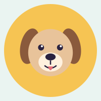

About the shelter
Paws Haven is a small, volunteer-run shelter. Since opening, we have found homes for hundreds of dogs, cats and rabbits.
Every animal here is vaccinated, checked by a vet and ready to go home with the right family.
Three friends waiting for you

Biscuit
Beagle, 2 years. Loves walks.

Luna
Persian, 1 year. Calm and cuddly.

Maple
Dutch rabbit, 6 months. Curious.
Where to start
Not sure where to begin? Try one of these.
Meet the pets waiting for a home, or read the adoption steps.
Send an adoption application when you have found a match.
See what else we offer on the services page, enjoy our happy tails gallery, or contact us.
Visit us
Open: Tuesday to Sunday, 10am to 5pm. Closed: Monday.
No appointment needed for a first look, but applying first saves time.